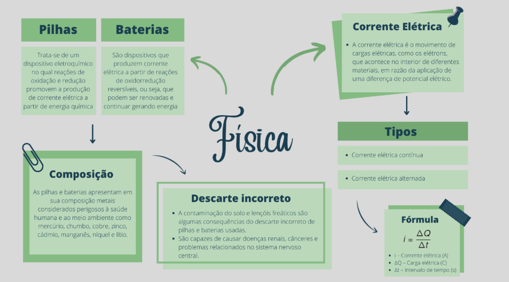
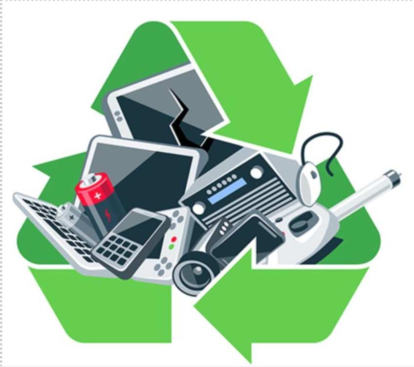
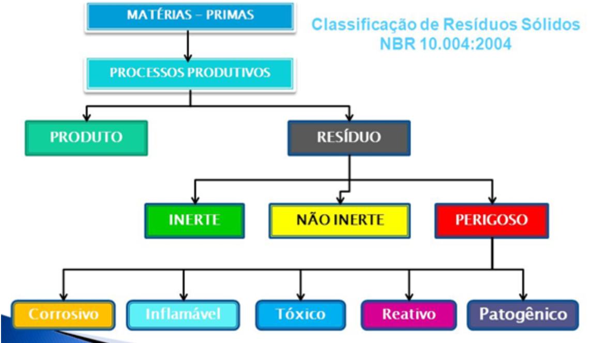
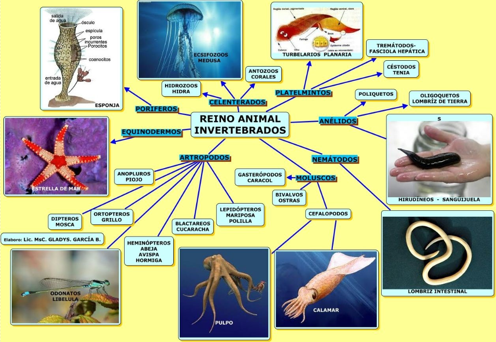
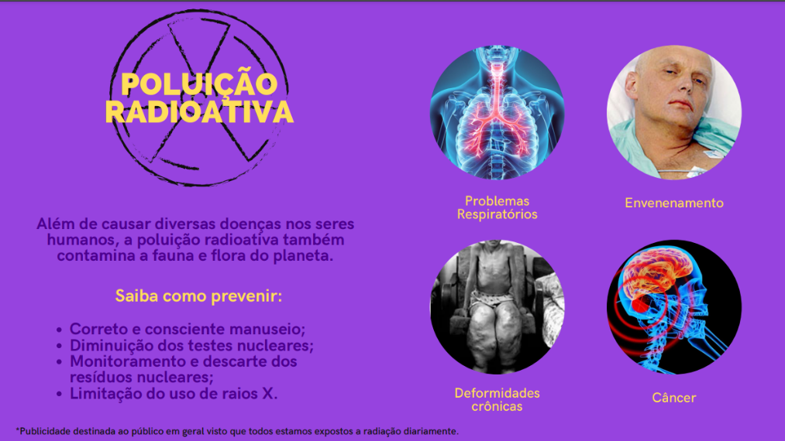

Ciências da Natureza
Habilidades
FMT3CNT101: Interpretar eventos e informações provenientes de variadas fontes e de relevância sociocultural e ambiental através do uso do método científico e comunicá-los utilizando diferentes linguagens verbais e não verbais para públicos diversos, com clareza, objetividade e senso crítico, usando tecnologias digitais de informação, comunicação TDIC e promovendo o debate de ideias.
EMT3CNT102: Analisar e debater tecnologias e conhecimentos científicos considerados dilemas éticos da sociedade contemporânea, com base em argumentos consistentes, legais, éticos e responsáveis, e diferenciando-os de opiniões pessoais sem base científica
EMT3CN103: Investigar e discutir usos indevidos de conhecimentos naturais, ciência e tecnologia na justificativa de processos de discriminação, segregação e privação de direitos individuais e coletivos, em diferentes contextos sociais e históricos, para promover a equidade e o respeito a diversidade étnica, cultural, religiosa, de género etc.
EMT3CNT104: Investigar e analisar cadeias de produção, regras sociais e outros padrões e processos cotidianos, selam eles individuais ou coletivos, aplicando o conhecimento científico na previsão e mitigação dos danos e riscos pessoais e socioambientais envolvidos, podendo fazer uso de dispositivos e aplicativos digitais que viabilizem estruturação de simulações de tais riscos.
EMI3CN105: Investigar e analisar diferentes materiais e suas aplicações industriais. urbanas, tecnológicas e pessoais, levando em consideração os componentes de diferentes equipamentos eletrônicos e avaliar suas origens, métodos de extração, usos e descarte, propondo soluções criativas, seguras e sustentáveis.
EMT3CNT106: Reelaborar, propor e construir soluções que envolvam situações - problema, identificando necessidades desigualdades regionais e globais, considerando os efeitos de programas de infraestrutura e demais serviços básicos, apropriando-se de saber científico sob a ótica socioambiental, tecnológica, política e econômica, para promover ações que contribuam para o desenvolvimento dos seres vivos baseado em valores de equidade e cidadania e qualidade de vida.
Competências
Investigar situações problema e avaliar aplicações do conhecimento científico e tecnológico e suas implicações no mundo, utilizando procedimentos e linguagens próprios das Ciências da Natureza, para propor soluções que considerem demandas locais, regionais ou globais, e comunicar suas descobertas e conclusões a públicos variados, em diversos contextos e por meio de diferentes mídias e tecnologias digitais de informação e comunicação (TDIC).
Pilhas e Baterias
Pilhas - trata-se de um dispositivo eletroquímico no qual reações de oxidação e redução promovem a produção de corrente elétrica a partir de energia química. Baterias - são dispositivos que produzem corrente elétrica a partir de reações de oxirredução reversíveis, ou seja, que podem ser renovadas e continuar gerando energia. As baterias, assim como as pilhas, apresentam um ânodo e um cátodo, ambos em contato com um eletrólito (na forma de solução ou em gel).
Lixo eletrônico
O lixo eletrônico é produzido por materiais de origem inorgânica, como o cobre, zinco, alumínio e metais pesados. Produtos elétricos ou eletrônicos que são descartados por não terem mais utilidade.
Classificação de resíduos sólidos
A classificação dos resíduos sólidos é realizada de acordo com suas características ou propriedades. A classificação é relevante para a escolha da destinação ambientalmente adequada. Os resíduos podem ser classificados quanto: à natureza física, a composição química, aos riscos potenciais ao meio ambiente e ainda quanto à origem. A legislação vigente de classificação de resíduos é aplicada, por exemplo, aos resíduos industriais, de saúde, de construção civil e os radioativos. Os resíduos sólidos são classificados em: Resíduos Classe I - perigosos Resíduos Classe IIA - não perigosos não inertes Resíduos Classe IIB - não perigosos inertes
Método científico
Para realizar uma pesquisa científica é necessário seguir etapas, sendo a primeira, a teoria, pois antes de observar é essencial, primeiramente, seguir seus conhecimentos para depois ter uma formulação de hipótese, e assim tendo uma rejeição ou aceitação dela. A ciência é construída com teorias, observações, hipóteses, experimentações, análises e as conclusões. Todavia, não é possível construir a ciência com uma só pessoa, pois são necessários vários pontos de vista, debates, entre outros. O principal objetivo da ciência é a explicação de fenômenos, porém independente de quantas vezes você observa esse fenômeno e tira qualquer conclusão, não significa que essa será a verdade para outras pessoas ou lugares. É possível inferir erros no processo, pois por exemplo, se observar somente um ponto de vista, automaticamente, anulará outros fenômenos que poderá estar mais correto. O conhecimento científico é duradouro, porém com o tempo, avanço e comprovação da tecnologia ele poderá se modificar.
Reino Animal
Estudamos sobre os filos dos invertebrados (poríferos, cnidários, platelmintos, nematelmintos, moluscos, anelídeos, artrópodes e equinodermos) e os filos dos vertebrados (mamíferos, aves, anfíbios, répteis e peixes).
Radiação
Breve vídeo sobre a série que estudamos radiação